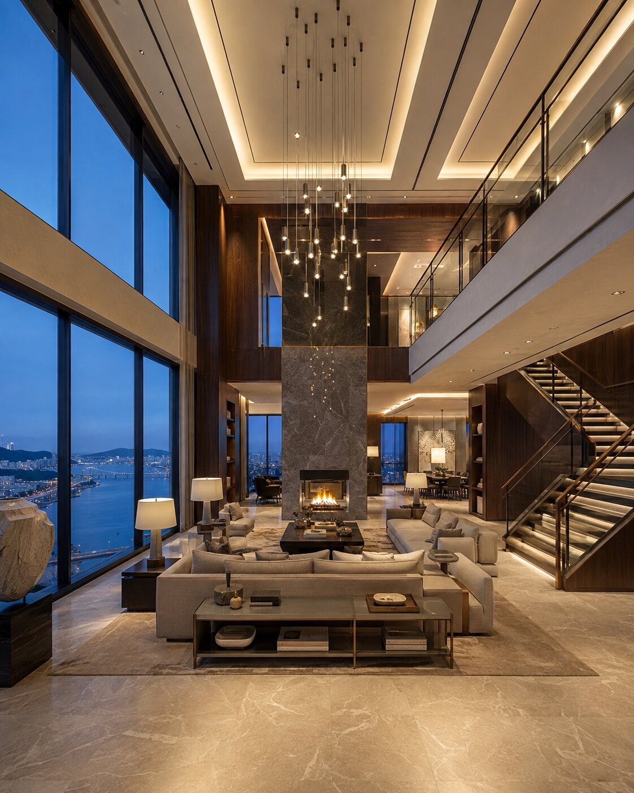

SELECTED ARCHITECTURE / 03
해온 코스탈 리조트HAEON COASTAL RESORT
해안의 풍경과 도시의 스카이라인을 연결하는
대규모 리조트 건축 프로젝트.
03PROJECT OVERVIEW
대지의 풍경이 건축의 표정이 되다.
바다와 산이 만나는 대지의 수평선을 따라 두 개의 매스를 배치하고, 낮은 포디움과 깊은 처마로 사람의 스케일을 만들었습니다. 밝은 석재와 브론즈 커튼월, 한국적 소나무 조경과 수공간이 입면의 반복적인 리듬을 부드럽게 연결합니다. 낮과 밤, 가까운 장면과 먼 풍경 모두에서 하나의 건축으로 읽히도록 설계했습니다.
PROJECT GALLERY
건축의 장면들
